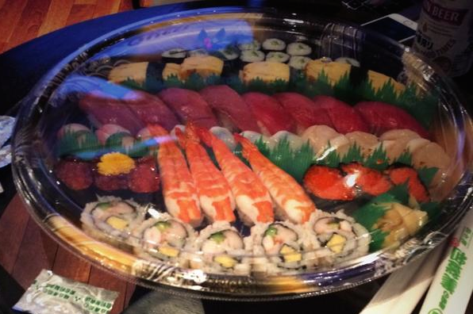
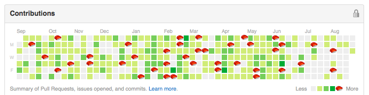

🍣現状確認会
概要

http://www.zusaar.com/event/9467003
こちらからの確認内容の共有です
スシゲートの人間として
完了するわけにはいかないな。

というわけで
過去4回、おすしやさん 「禅」に向かった旅の記録を手短に共有させていただきます。
前提
☆ 予約不可
☆ 開店前から並ぶ
開店の瞬間にはすでに10組ほど並んでいる
要件定義
魂が回転寿司 「禅」に無事デプロイされること。
対象のアドレスは
2-1-29 Higashicho, Odawara, Kanagawa 250-0003
「回転 禅」で検索。

プロトコル
小田急 RTTP(ロマンストランスポーテーションプロトコル)を使います。
from 新宿駅 to 小田原駅
(往路)新宿 -> ロマンスカー -> 小田原 -> タクシー -> 禅
(復路)新宿 <- ロマンスカー <- 小田原 <- タクシー <- 禅
よい時間
新宿駅で、朝 9時30分発のロマンスに乗ると、
小田原駅の時点で10:30前後。
禅に到着する頃には開店20分前くらいなので、最小の並びで食えてベストです。
Quota
ロマンスカー 片道: ¥870(特急料) + ¥1,150(乗車料) = ¥2,020
巡礼費:不明(¥6000~一万円いかないくらい)
おまけ
🍣へのコミットを表すSushitributeという日記をつけるのはどうでしょうか。

以上です。